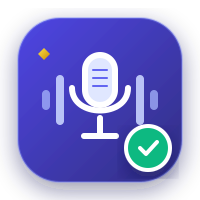
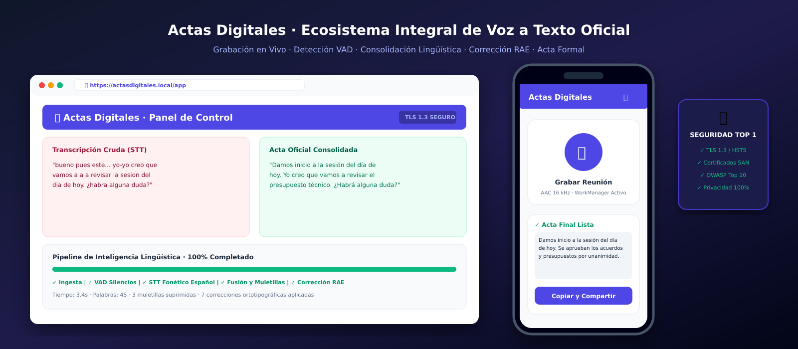
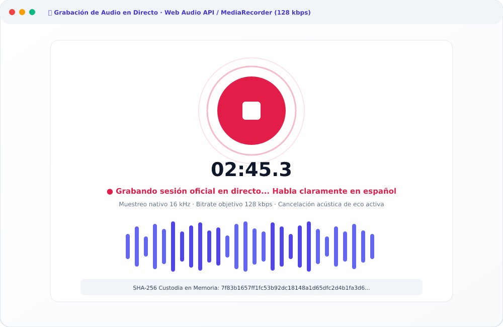
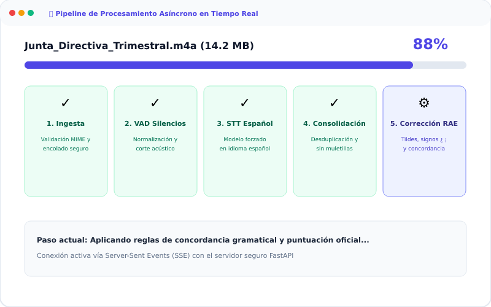
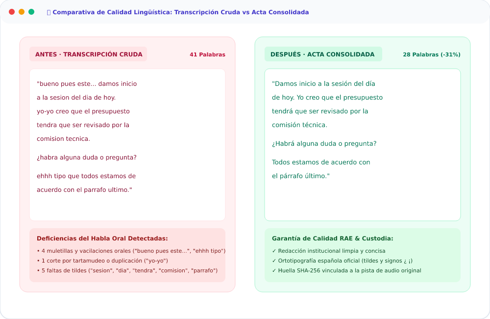
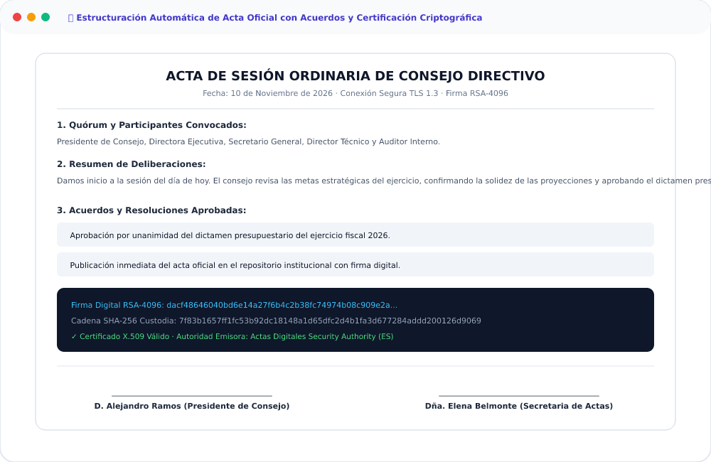
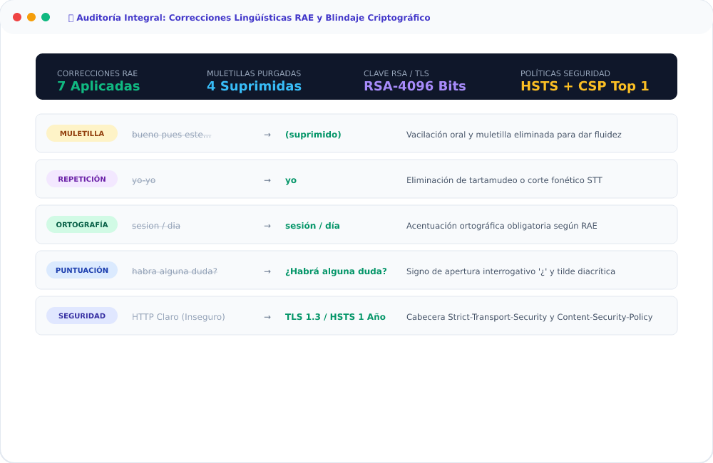
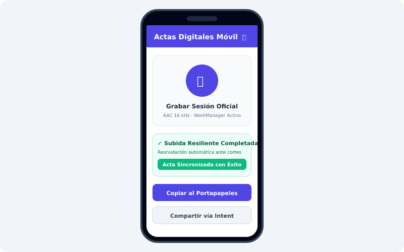
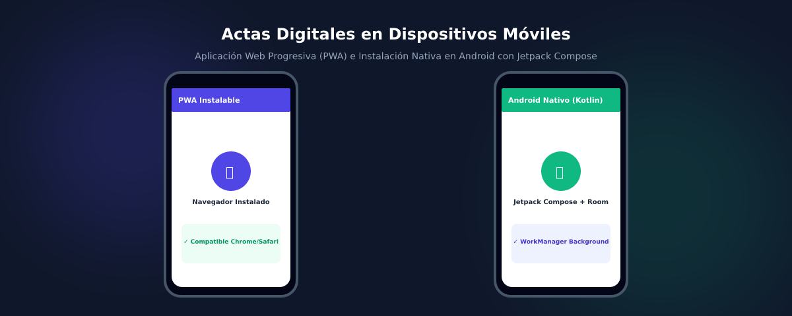

Actas Digitales v1.2.0Plataforma de alta seguridad para secretarías generales, directivas y comités oficiales. Captura acústica en 128 kbps, transcripción adaptativa forzada en español, supresión de muletillas, corrección gramatical RAE y emisión de acta formal con firma digital.

Un pipeline asíncrono y determinista diseñado para procesar deliberaciones complejas con máxima fidelidad.
Ingesta concurrente de audio mediante Web Audio API o Android MediaRecorder.
Extracción fonética mediante Whisper adaptativo y supresión de silencios VAD.
language="es")Fusión de fragmentos y purga de vacilaciones propias del lenguaje oral.
Gramática estricta de la RAE, estructuración legal y exportación oficial.
Inspección visual completa del ecosistema Web y Android funcionando en tiempo real.

Captura con Web Audio API, cancelación acústica de eco, visualizador VU-meter de frecuencias y cálculo de custodia SHA-256 en memoria.

Seguimiento asíncrono vía Server-Sent Events (SSE). Visualización instantánea del avance de Ingesta, VAD, Transcripción y Formalización.

Contraste visual lado a lado: texto crudo con vacilaciones frente al acta consolidada con métricas de palabras y velocidad lectora.

Estructuración formal con quórum, resumen de deliberaciones, acuerdos numerados y bloques para firmas de presidencia y secretaría.

Desglose transparente de todas las muletillas suprimidas, palabras corregidas, tildes añadidas y verificación de cabeceras HSTS/CSP.

Interfaz desarrollada con Jetpack Compose y Material 3. Subidas resilientes en segundo plano mediante WorkManager y compatibilidad TLS 1.3.
Graba deliberaciones presenciales directamente desde tu dispositivo móvil. Diseñada con Jetpack Compose, grabador nativo AAC de 128 kbps y subidas automáticas con reanudación ante caídas de señal mediante WorkManager.
adb install -r app-release.apk

Protección absoluta de las deliberaciones institucionales. Cifrado de extremo a extremo sin intermediarios externos.
| Parámetro | Implementación | Nivel de Blindaje |
|---|---|---|
| Clave de Certificados | RSA 4096 Bits con exponente e=65537 (CA Raíz y Servidor) | Máximo Estándar Corporativo |
| Protocolo de Transporte | TLS 1.3 con Cifrado Autenticado AEAD (TLS_AES_256_GCM_SHA384) | Obligatorio |
| Cadena de Custodia | SHA-256 inmutable generado en ingesta y estampado en el acta | Anti-manipulación |
| Cabecera HSTS | max-age=31536000; includeSubDomains; preload |
1 Año Estricto |
| Políticas Web | CSP Restrictivo, X-Frame-Options: DENY, Permissions-Policy mic | Anti-Clickjacking / XSS |
| Firma de APK | Firma Digital v1 JAR Scheme con clave RSA-4096 y X.509 | Verificado Androguard |